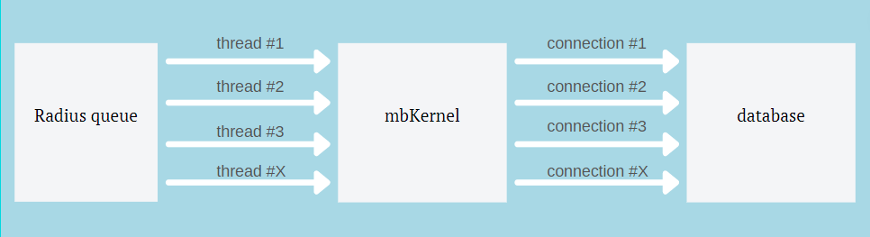

Настройка модуля MBRadius¶
Посмотрим на конфигурацию radius (radiusd.conf)
1 2 3 4 5 6 7 8 9 10 11 12 13 14 15 16 17 18 19 20 21 22 23 24 25 26 27 28 29 30 31 32 33 34 35 36 37 38 39 40 41 42 43 44 45 46 47 48 49 50 51 52 53 54 55 56 57 58 59 60 61 62 63 64 65 66 67 68 69 70 71 72 73 74 75 76 | prefix = /usr
exec_prefix = /usr
sysconfdir = /etc
localstatedir = /var
sbindir = /usr/sbin
logdir = ${localstatedir}/log/radius
raddbdir = ${sysconfdir}/raddb
radacctdir = ${logdir}/radacct
name = radiusd
confdir = ${raddbdir}
run_dir = ${localstatedir}/run/${name}
db_dir = ${raddbdir}
libdir = /usr/lib/freeradius
pidfile = ${run_dir}/${name}.pid
max_request_time = 9
cleanup_delay = 10
max_requests = 2097152
listen {
type = auth
ipaddr = *
port = 0
}
listen {
ipaddr = *
port = 0
type = acct
}
hostname_lookups = no
regular_expressions = yes
extended_expressions = yes
log {
destination = files
file = ${logdir}/radius.log
#requests = ${logdir}/radiusd-%{%{Virtual-Server}:-DEFAULT}-%Y%m%d.log
syslog_facility = daemon
stripped_names = no
auth = no
auth_badpass = no
auth_goodpass = no
}
checkrad = ${sbindir}/checkrad
security {
max_attributes = 3000
reject_delay = 0
status_server = yes
}
proxy_requests = off
thread pool {
start_servers = 8
max_servers = 12
min_spare_servers = 1
max_spare_servers = 1
max_requests_per_server = 0
max_queue_size = 1048576
auto_limit_acct = no
}
modules {
$INCLUDE ${confdir}/modules/
$INCLUDE sql.conf
}
instantiate {
expr
}
$INCLUDE sites-enabled/
|
нас интересуют отдельные строки
max_request_time = 9 cleanup_delay = 10 max_requests = 2097152 ... thread pool { start_servers = 8 max_servers = 12 min_spare_servers = 1 max_spare_servers = 1 max_requests_per_server = 0 max_queue_size = 1048576 auto_limit_acct = no }
Рассмотрим эти параметры:
- max_request_time¶
Максимально время за которое модуль mbkerenl должно обработать запрос и вернуть результат
- cleanup_delay¶
После получения результата, радиус будет хранить этот «результат» у себя в памяти на случай если результат не дойдет до BRAS сервера и BRAS заново отправит запрос.
- max_requests¶
Размер того самого хранилища для результатов, которые радиус будет хранить в памяти пока не очистит
- start_servers¶
Начальное кол-во потоков которое будет запущено для обработки запросов авторизации
- max_servers¶
Максимальное кол-во потоков которое будет запущено для обработки запросов авторизации
- min_spare_servers¶
Не используется в нашем модуле
- max_spare_servers¶
Не используется в нашем модуле
- max_requests_per_server¶
Максимальное кол-во запросов которое может обработать один поток, после чего он будет перезапущен ( 0 - без ограничения )
- max_queue_size¶
Размер очереди для запросов авторизации
- auto_limit_acct¶
Ограничение accounting запросов
Теперь посмотрим на изображение ниже
Все полученные запросы радиус помещает в «Radius queue» размер которого зависит от параметра max_queue_size, далее из очереди запросы передаются через потоки к модулю mbKernel, в свою очередь модуль mbKernel создает соединение с базой на каждый поток радиуса.
Как подобрать параметры¶
1 поток способен обработать до 20-25 запросов в секунду (тесты ниже). mbKernel автоматически создает дочерний процесс под каждый поток радиуса, по этому на каждом радиус сервере нужно высчитывать его pps запросов.
Узнать pps можно с помощью tcpdump и capinfos:
Установка софта¶
capinfos доступен из пакета wireshark по этому для установки выполним
Для Centos:
dnf install tcpdump wireshark
Для Debian:
apt-get install tcpdump wireshark
Определение pps¶
После установки нужно запустить tcpdump на принимающем radius запросы интерфейсе с записью в файл
tcpdump -i eth1 port 1812 -w /tmp/radius_pps.pcap
Для записи будет достаточно 5-10 минут (что бы успел пройти accounting интервал)
После чего можно посмотреть информацию о записи, выполнив:
capinfos /tmp/radius_pps.pcap
В результате будет показана информация:
1 2 3 4 5 6 7 8 9 10 11 12 13 14 15 16 17 18 19 20 21 22 23 24 25 26 27 | File name: /tmp/radius_pps.pcap
File type: Wireshark/tcpdump/... - pcap
File encapsulation: Ethernet
File timestamp precision: microseconds (6)
Packet size limit: file hdr: 262144 bytes
Number of packets: 985
File size: 118 kB
Data size: 102 kB
Capture duration: 8.437724 seconds
First packet time: 2021-06-18 18:07:35.578060
Last packet time: 2021-06-18 18:07:44.015784
Data byte rate: 12 kBps
Data bit rate: 97 kbps
Average packet size: 103.89 bytes
Average packet rate: 116 packets/s
SHA256: ef76dc37e0b4bb74f07ee66305fb9c170a064514ad84342ad134271264af319c
RIPEMD160: a1b65b2b63c883ea1a0d862a665044ee8b1666c9
SHA1: 3782a747440f95a55580b41b40b6f8d78ec5be86
Strict time order: True
Number of interfaces in file: 1
Interface #0 info:
Encapsulation = Ethernet (1 - ether)
Capture length = 262144
Time precision = microseconds (6)
Time ticks per second = 1000000
Number of stat entries = 0
Number of packets = 985
|
Тесты¶
Дата выпуска |
Q1 2012 |
|---|---|
CPU |
2х Intel(R) Xeon(R) CPU E5-2650 0 @ 2.00GHz |
Cores |
x16 |
RAM |
DDR3 16gb |
SSD |
SAMSUNG MZ7KM480HAHP-0E005 |
Тест 1: влияние кол-ва потоков радиуса¶
Radperf |
200 потоков |
|---|---|
Кол-во запросов авторизации |
10000 |
Посмотрим график производительности модуля mbKernel
Loading…
Влияние потоков на производительность
Loading…
Влияние потоков на время обработки всех запросов
Как видно на графике, повышение кол-ва потоков увеличивает производительность и сокращается время требуемое на обработки всех запросов
Давайте посмотрим что поисходит с временем затраченным на обработку одного запроса
Loading…
Влияние потоков на время обработки одного запроса
На графике видно как до определенного кол-ва потоков запросы обрабатываются <1 сек, после чего довольно резко переходят до <0.1s. Это связано с тем, что запросы некоторое время «ожидают» в очереди радиуса
Тест 2: максимальная производительность¶
В данных тестах мы прогоняли от 1000 до 1.000.000 запросов авторизации
Radperf |
128 потоков |
|---|---|
Радиус |
128 потоков |
RAM |
DDR3 16gb |
Посмотрим график производительности модуля mbKernel
Loading…
Производительность модуля mbKernel (packets/s)
Loading…
Затраченное время на обработку всех запросов
Как видно на графике удалось разогнать packets/s до 2954, на 1.000.000 было замечено падение производительности.
Radperf |
256 потоков |
|---|---|
Радиус |
256 потоков |
RAM |
DDR3 32gb |
Loading…
Производительность модуля mbKernel (packets/s)
Loading…
Затраченное время на обработку всех запросов
Как видно на графике удалось разогнать packets/s до 4583, на 1.000.000 было замечено падение производительности и более высокая нагрузка на MySQL.
Заключение¶
Логика в настройке радиуса проста: больше потоков => больше производительнось, но не стоит забывать что каждый поток потребляет ресурсы сервера и если «увлектись» и выставить слишком большое кол-во потоков то можно добиться обратного эффекта снизив производительность.
При возникновении проблем, сообщите о них в нашем CRM или Telegram канале.